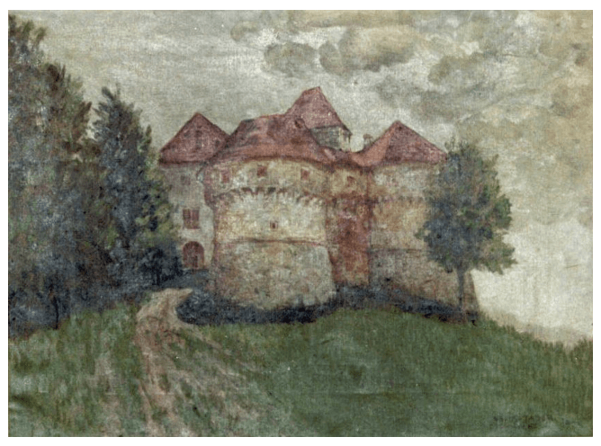

VELIKI TABOR

Veliki Tabor se nalazi u najzapadnijem dijelu Zagorja, na pristupačnom uzvišenju. Građen je u doba kad više nije trebalo misliti samo o obrani, već se moglo težiti i izvjesnoj udobnosti. Ipak, svij dijelovi ovoga grada mogu preuzeti i obrambenu ulogu. Cijeli velikotaborski plato bio je zaštićen zidom. Nedaleko ulaza još uvijek stoji dobro očuvan peterokutni bastion, koji je nadzirao glavni prilaz gradu.
Posebnost Taboru daju široke kule povezane kratkim potezima zida, dok su uobičajeno duži potezi zida povezani kulama. Veliki Tabor je došao do naših dana s malo naknadnih izmjena i dogradnji, sačuvavši svoju izvornu skladnost. Podignut je po svemu sudeći poslije 1502. godine, nakon što je Ivaniš Korvin pripadnicima mađarske obitelji Ratkaj darovao posjed u zapadnome Zagorju. Grad se postupno širio, ponajviše u 16. stoljeću, ostavši glavnim sjedištem Ratkaja sve do kraja njihove loze 1793. godine. Poslije toga naizmjence je u državnom i privatnom vlasništvu, a između dva svjetska rata vlasnik mu je bio poznati slikar Oton Iveković.
